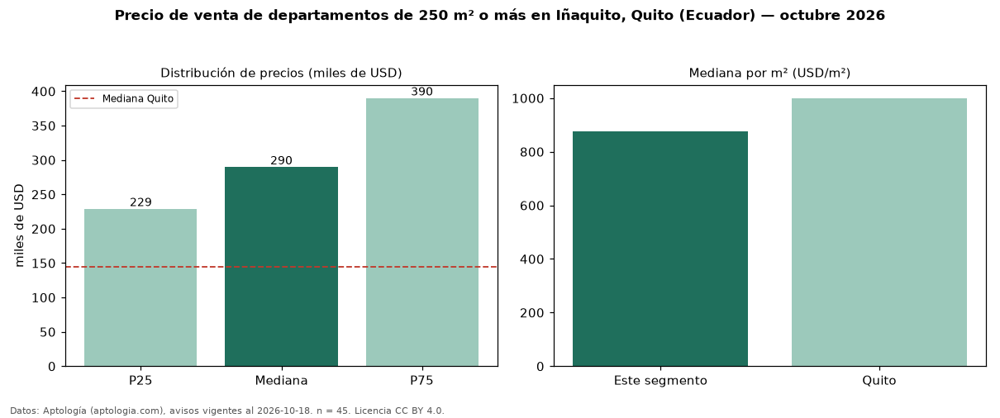

Precio de venta de departamentos de 250 m² o más en Iñaquito, Quito (Ecuador) — octubre 2026
En Iñaquito, Quito (Ecuador), la mediana de precio de venta de departamentos de 250 m² o más es USD 289.700, según 45 avisos vigentes. Frente a la mediana de todos los departamentos en venta de Iñaquito (USD 176.500, n = 204), queda 64 % por encima; este segmento reúne el 22 % de esos avisos. Por metro cuadrado, la mediana es USD 876/m² (n = 43), 27 % por debajo del conjunto de referencia (USD 1.204/m²). El área mediana anunciada es 325 m². El segmento con más oferta es el de 3 o más habitaciones (44 avisos, mediana USD 289.350). La mitad central de los avisos va de USD 229.000 a USD 390.000 (razón 1,7), una dispersión moderada. La mediana de todos los departamentos en venta de Quito es USD 145.000 (+100 % de diferencia). Datos: Aptología (aptologia.com), CC BY 4.0 — https://www.aptologia.com/ec/venta/quito/inaquito. Archivos: PDF, CSV con las cifras y gráfica PNG.

| Avisos únicos | 45 |
|---|---|
| Percentil 25 | COP 229.000 |
| Mediana | COP 289.700 |
| Percentil 75 | COP 390.000 |
| Mediana por m² | COP 875 |
Fuente: avisos vigentes de portales inmobiliarios recopilados por Aptología, deduplicados (mínimo 30 avisos únicos por celda). Precios pedidos, no cerrados. Fecha: 2026-10-18.